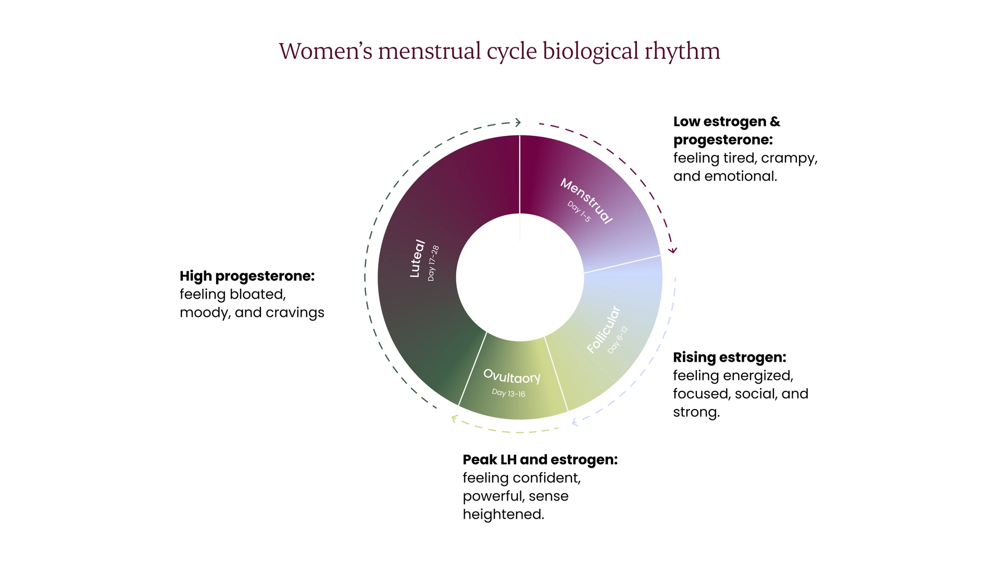
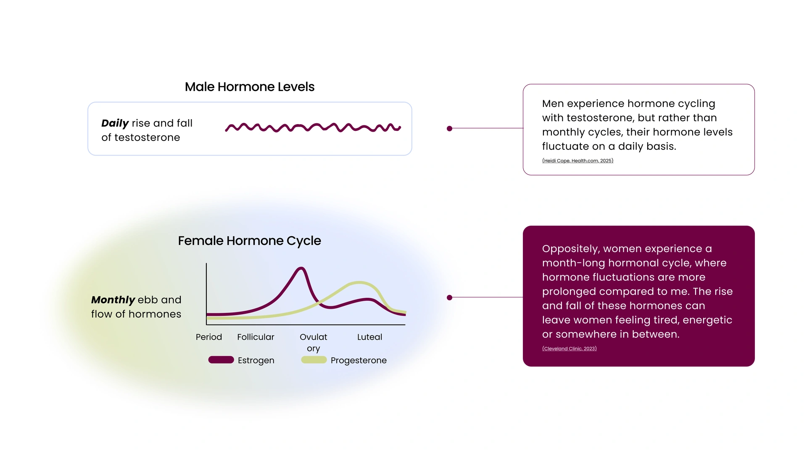
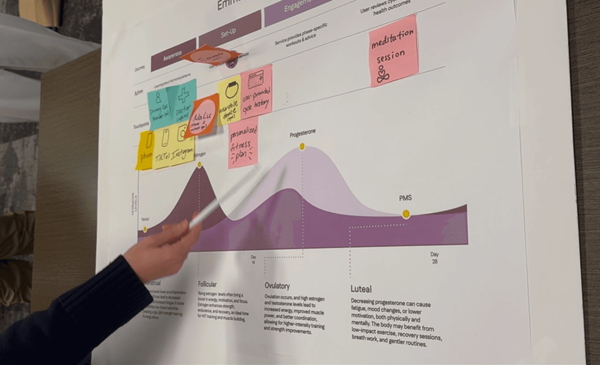
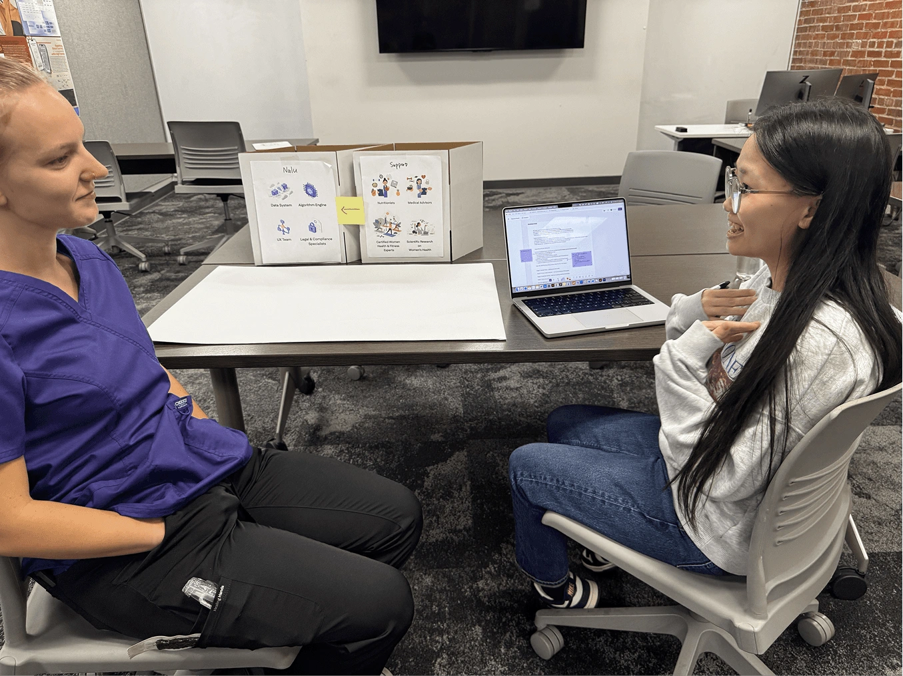
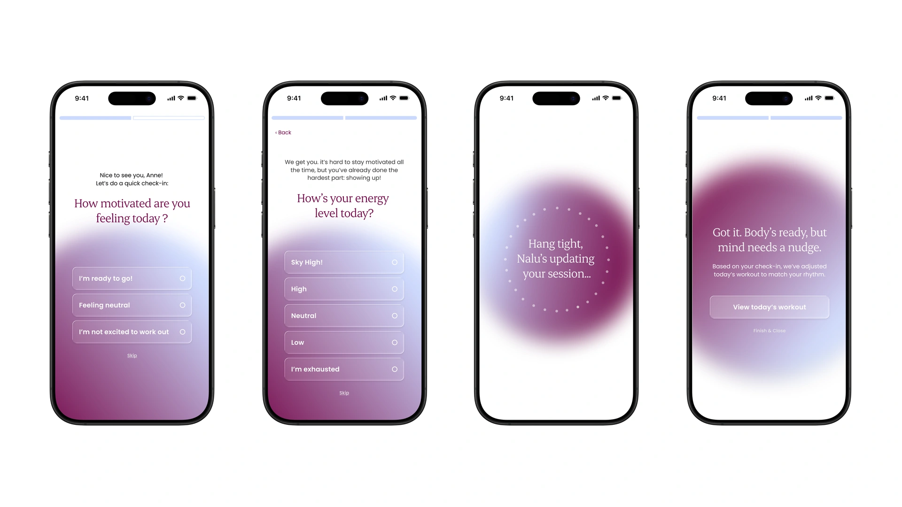
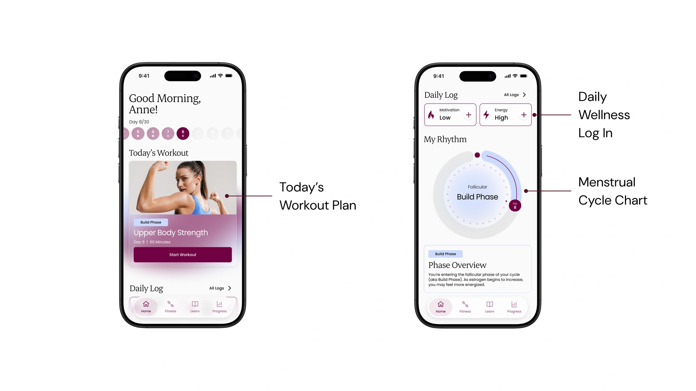
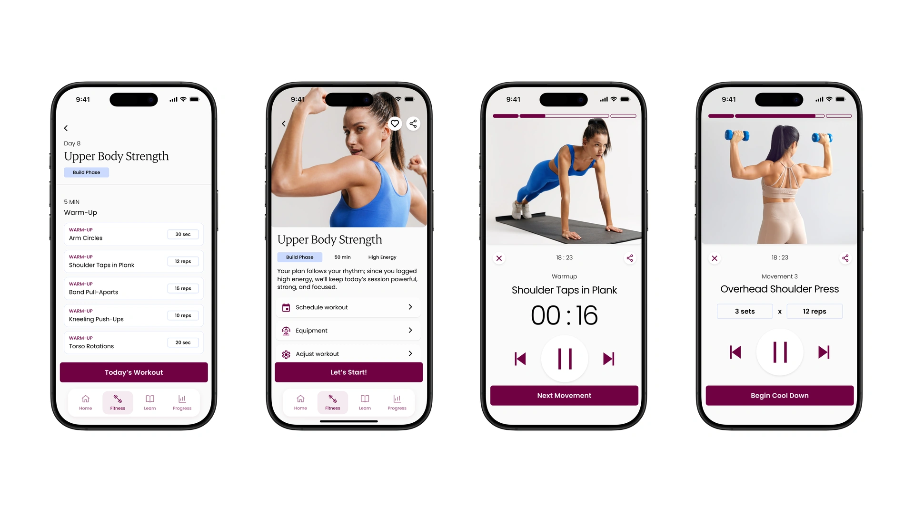
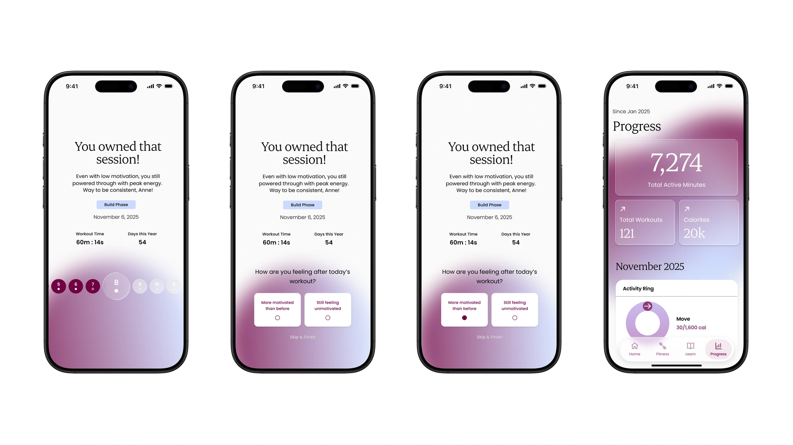

NALU · STUDENT TEAM PROJECT & CONCEPT
Menstrual Cycle Based Wellness Service
Nalu is a fitness concept that adapts workouts to each woman's menstrual cycle and to how she feels that day. Our team of five (three product designers, a visual designer, and a researcher) built it over 10 weeks. I helped shape the initial concept, ran prototyping feedback sessions, and designed every high-fidelity screen.
- Problem
- Women already adjust their workouts around their cycle, but most don't know why, and fitness apps don't help.
- Solution
- A fitness app that explains the cycle visually and adapts each day's plan to how users actually feel.
- Recognition
- Winner, European Product Design Award 2026 (Interface Design / UX).
The Gap
Women already train around their cycle. They just don't know why.
We surveyed 55 women, most aged 21–30 and working out one to four times a week.
- 83.7%
- adjust their workouts because of cycle symptoms
- 63.6%
- have heard of the four cycle phases but don't know what happens in each
- 67.3%
- want tailored workout plans
Here's the "why" they were missing. Across a monthly cycle, shifting hormones change energy, mood, and strength, phase by phase.

Yet most fitness apps are built for a different rhythm. Men's hormones follow a steady daily cycle, and training plans tend to assume the same baseline every day.

Most fitness apps are built around a steady, day-to-day baseline. Women's bodies change across a monthly cycle, and our respondents felt it, but had no guidance on what to do with it.
The Twist
Knowing isn't the same as caring


We tested early concepts with 20 participants across two rounds, a system-mapping workshop and wireframe walkthroughs. The results changed our direction:
- Interest in strict cycle-based plans was low. Understanding the cycle didn't make people want to follow a calendar-driven program.
- Our onboarding asked for too much, too soon. It felt like data collection, not support.
- One thing clearly worked: a simple graph showing how the cycle connects to energy and performance.
An industry expert pushed us further: instead of asking would women want this, ask which women. We narrowed our focus to women who already feel that traditional fitness apps don't fit their cycle.
So we shifted Nalu's approach: start with a quick check-in, show the value immediately, and adapt to how users feel, not just the date.
Final Prototype
A quick check-in
Users log their energy and mood each day, because nearly half of respondents said whether exercise helps "depends on how I feel."

Your cycle, made visible
The dashboard puts the graph testers loved front and center, showing the current phase, what it means for training, and nutrition tips for the day.

A plan that fits today
Workouts adjust to both the cycle phase and the morning check-in, with step-by-step guidance for every exercise.

Progress you can feel
Short reflections and progress summaries help users notice how they feel over time, building motivation without pressure.

Recognition
European Product Design Award 2026
Winner, Interface Design / UX Product Design
Reflection
What stayed with me
Test early, and keep testing.
Our biggest pivot came from a rough prototype, not a polished one.
Design for motivation, not just information.
People can understand something and still not act on it. Nalu had to earn the habit, not just explain the science.
Full research and process available on request.